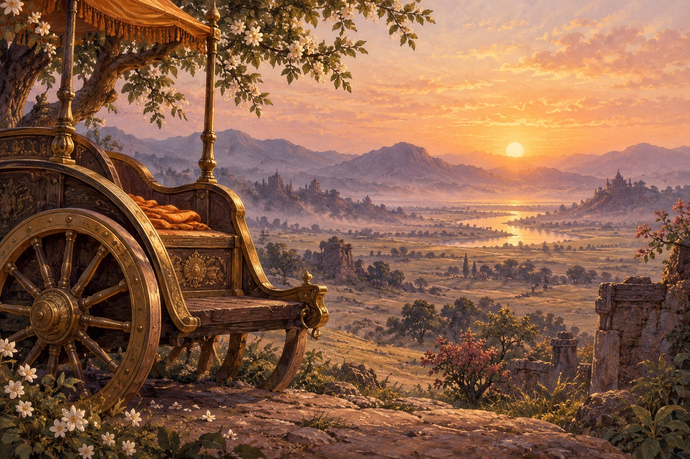

प्रश्नों से शुरुआत · 2:9
सुनने की जगह
अर्जुन कहते हैं कि वे युद्ध नहीं करेंगे और मौन हो जाते हैं। संवाद के इस विराम के बाद कृष्ण का विस्तृत उत्तर आता है।
संपादकीय सारांश · शास्त्र का अनुवाद नहीं
अपना निर्णय बताने के बाद अर्जुन क्या करते हैं?
थोड़ा और समझें
- मौन हो जाते हैं
मौन बातचीत का मोड़ है। अर्जुन अपनी व्यथा कह चुके हैं; अब ऐसे उत्तर के लिए जगह बनती है जो उनके विचारों को चुनौती देता है।
उद्धृत अंश की संपादकीय व्याख्या
पाठ पूरा हुआ
मनन का एक पल · वैकल्पिक
कठिन बातचीत में क्या तुम सुनने के लिए जगह बना सकते हो?
यह आपके लिए है। कोई उत्तर सहेजा या आँका नहीं जाता।
यह पूर्वावलोकन प्रगति सहेजता नहीं है और उसे ऐप में नहीं भेजता।
iPhone ऐप के लिए वार्षिक सदस्यता ज़रूरी है। आपके क्षेत्र में App Store पर दिखाया गया मूल्य लागू होता है। कोई निःशुल्क परीक्षण नहीं है।
मूल अंश पढ़ें
भगवद्गीता 2:9
अंश का संदर्भ
भगवद्गीता महाभारत का संवाद है, जो कुरुक्षेत्र युद्ध से पहले घटता है। अर्जुन विरोधी सेनाओं में संबंधियों और गुरुओं को देखते हैं। ये आरंभिक श्लोक उनका संकट बताते हैं; ये संपूर्ण उपदेश या युद्ध करने का सामान्य आदेश नहीं हैं।
सारांश और व्याख्या मौलिक शैक्षिक नोट्स हैं, शास्त्र का अनुवाद नहीं। विभिन्न परंपराओं की व्याख्याएँ अलग हो सकती हैं।
Sanskrit text: gita/gita contributors, pinned edition c6fce39595445768876ddbb8d1268a9c935e1d2b. Original Swastiastu learning notes are separate from scripture.
Public-domain Sanskrit; repository distributed under the Unlicense. See GITA-NOTICE.txt and GITA-UNLICENSE.txt.
स्रोत वेबसाइट